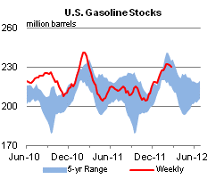

Released: February 29, 2012
Next Release: March 7, 2012
A review of developments in crude oil and product markets over the past two months
Today, EIA released The Availability and Price of Petroleum and Petroleum Products Produced in Countries Other Than Iran, a 60-day recurring report required under Section 1245(d)(4)(A) of Public Law 112-81, the National Defense Authorization Act for Fiscal Year 2012. The Act requires that, not later than 60 days from enactment and every 60 days thereafter, the "Energy Information Administration, in consultation with the Secretary of the Treasury, the Secretary of State, and the Director of National Intelligence, shall submit to Congress a report on the availability and price of petroleum and petroleum products produced in countries other than Iran in the 60-day period preceding the submission of the report."
This report and its future editions are intended to provide information relevant to the President's determination under Section 1245(d)(4)(B) of the Act as to whether the "price and supply of petroleum and petroleum products produced in countries other than Iran is sufficient to permit purchasers of petroleum and petroleum products from Iran to reduce significantly in volume their purchases from Iran."
The statutory language clearly envisions an EIA report that is primarily, if not exclusively, backward looking in nature. Given this focus, it is important to recognize that due to time lags in the collection of production and consumption data nearly all of the petroleum and petroleum product volumes presented in the report for the 60-day period preceding its publication are estimates rather than actual data. In contrast to data on petroleum and petroleum product volumes, price data is available on a real-time or near-real-time basis.
EIA estimates that the world oil market has become increasingly tight over the first two months of this year. Oil prices have risen since the beginning of the year and are currently at a high level. Global liquid fuels consumption is at historically high levels. While the economic outlook, especially in Europe, remains uncertain, continued growth is expected. Unusually cold weather in Europe contributed to tighter markets by increasing the demand for heating oil, particularly during February.
With respect to supply, the world has experienced a number of supply interruptions in the last two months, including production drops in South Sudan, Syria, Yemen, and the North Sea. Both the United States and the European Union (EU) have acted to tighten sanctions against Iran, including measures with both immediate and future effective dates. There is some evidence that these measures may already be causing some adjustments in oil supply patterns. For example, there is emerging evidence that some shipments of Iranian crude oil under existing contracts are being curtailed due to the unwillingness of U.S. and EU insurance providers to cover them, even though the EU sanctions only require existing oil contracts to be completely phased out by July 1, 2012.
Finally, spare crude oil production capacity, while estimated to be higher than during the 2003 to 2008 period, is quite modest by historical standards, especially when measured as a percentage of global oil production and considered in the context of current geopolitical uncertainties, including, but not limited to, the situation in Iran.
Crude oil prices have been generally rising over the past two months, particularly in recent weeks. This is reflected in price movements on the most commonly traded oil futures contracts. Comparing the 5-day periods ending December 30, 2011 and February 27, 2012, the price of the front month of the New York Mercantile Exchange (NYMEX) light sweet crude oil contract (WTI) rose from $99.77 per bbl to $107.66 per barrel. The Brent front month price, which is widely viewed as being more representative of global prices for light sweet crude oil, rose from $108.04 to $123.56 over the same period.
For the five days ending February 27, the average price of the June 2012 WTI crude oil futures contract was $108.64 per bbl and the average price of the June 2012 Brent contract was $121.91 per bbl. The WTI and Brent prices for June 2012 have increased by about $8 per bbl and $15 per bbl respectively since the end of December. Based on implied volatilities calculated from options and futures prices over the 5 days ending February 27, the probability of the June 2012 WTI futures contract expiring above $120 per barrel is 23 percent, a 4 percentage point increase relative to the same calculation made using price data from the 5-day period ending December 30. Given the higher absolute level and greater upward movement of Brent prices relative to WTI prices over the last two months, the change in the probabilities that the June Brent contract will exceed specified dollar thresholds are higher and have increase more over the past 60 days.
Gasoline prices have also generally been rising over the past two months, particularly in recent weeks. Reformulated blendstock for oxygenate blending (RBOB) is often traded instead of finished motor gasoline that already has been blended with ethanol, since oxygenate blending typically takes place at terminals along the distribution chain.
Comparing the 5-day periods ending December 30, 2011 and February 27, 2012, the price of the front month of the NYMEX RBOB contract, which calls for delivery in New York Harbor, rose from $2.68 per gallon to $3.11 per gallon. RBOB prices reflect pricing at the wholesale-level that do not include motor fuel taxes, or costs and profits associated with the distribution and retailing of gasoline. However, increases in RBOB prices are typically reflected in higher pump prices.
The average price of the June 2012 RBOB futures contract for the 5-day period ending February 27 was $3.25 per gallon, an increase of 49 cents per gallon from the 5-day period ending December 30. Based on implied volatilities calculated from options and futures prices over the 5 days ending February 27, the probability of the June 2012 RBOB futures contract expiring above $3.35 per gallon (comparable to a $4.00 per gallon national average retail price for regular grade gasoline) is 39 percent, a 23 percentage point increase from the result of the same calculation made using data for the 5-day period ending December 30.
A copy of The Availability and Price of Petroleum and Petroleum Products Produced in Countries Other Than Iran is available on the EIA website at http://www.eia.gov/analysis/requests/ndaa/.
Gasoline prices continue climbing, while the average diesel fuel price passes $4 per gallon
The U.S. average retail price of regular gasoline jumped 13 cents to $3.72 per gallon, about 34 cents per gallon higher than last year at this time. Prices were up across all regions, with the largest increase coming on the West Coast for the second consecutive week. The California price has surged more than 45 cents per gallon over the last two weeks. The Rocky Mountain price increased almost 10 cents to reach $3.20 per gallon, but remains the lowest regional average price in the Nation. Moving eastward, the Gulf Coast average price is $3.56 per gallon, and in the Midwest regular gasoline averages $3.62 per gallon. The East Coast price is the closest it has been all year to the national average, at $3.74 per gallon.
The national average diesel fuel price increased just over 9 cents to reach $4.05 per gallon, 34 cents per gallon higher than last year at this time. This is the first time since EIA started collecting data that the National diesel price has reached the $4 per gallon mark in February. The last time the national average retail diesel fuel price exceeded $4 per gallon was the week of November 21, 2011. The West Coast saw the largest increase in the Nation, as prices increased just over 16 cents to $4.33 per gallon. The East Coast price averaged $4.13 per gallon, and the Gulf Coast price hovered just under the $4 mark at $3.99 per gallon. Rocky Mountain and Midwest prices remain in close proximity at $3.92 and $3.91 per gallon, respectively.
U.S. average residential and wholesale heating fuel prices increase
The U.S. average residential heating oil price increased by 6 cents per gallon during the week ending February 27, 2012 to $4.11 per gallon. This price is 35 cents per gallon higher than the same time last year. The average wholesale heating oil price increased by 12 cents per gallon over the same period to a price just below $3.39 per gallon, 34 cents higher than last year at this time.
The average residential propane price increased by less than 1 cent to $2.87 per gallon during the week ending February 27, 2012, 1 cent per gallon higher than a year ago. The average wholesale propane price increased by 8 cents per gallon to $1.25 per gallon, 44 cents below the February 28, 2011 price of $1.69 per gallon.
Propane inventories continue to draw
Propane inventories in the United States were down 1.0 million barrels last week to end at 43.9 million barrels, but remained higher than the year-ago level and the 5-year range. Midwest regional stocks drew 0.7 million barrels and the East Coast regional stocks drew another 0.5 million barrels. Elsewhere, the Gulf Coast region added 0.2 million barrels while the Rocky Mountain/West Coast regional stocks fell by 0.1 million barrels from last week. Propylene non-fuel use inventories represented 10.8 percent of total propane inventories.
Text from the previous editions of This Week In Petroleum is accessible through a link at the top right-hand corner of this page.
| Retail Data | Changes From | Retail Data | Changes From | ||||
| 02/27/12 | Week | Year | 02/27/12 | Week | Year | ||
| Gasoline | 3.721 | Heating Oil | 4.108 | ||||
| Diesel Fuel | 4.051 | Propane | 2.868 | ||||
|
 |
||||||||||||||||||||||||||
| *Note: Crude Oil Price in Dollars per Barrel. | |||||||||||||||||||||||||||
|  | |||||||
| Stocks Data | Changes From | Stocks Data | Changes From | ||||
| 02/24/12 | Week | Year | 02/24/12 | Week | Year | ||
| Crude Oil | 344.9 | Distillate | 141.4 | ||||
| Gasoline | 229.9 | Propane | 43.900 | ||||